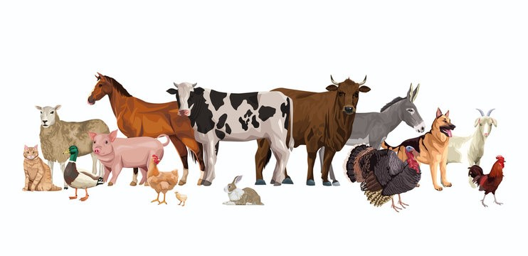

What is it?
BIOTIC COMPONENT
Biotic components are the living parts of an ecosystem. The term “biotic” is formed by the combination of two terms, “bio” meaning life and “ic” meaning like. The term means “life like” and is related to all the living entities present in an ecosystem. Based on nutrition, biotic components can be categorised into autotrophs, heterotrophs, and saprotrophs (or decomposers).
- Producers include all autotrophs such as plants. They are called autotrophs as they can produce food through the process of photosynthesis. Consequently, all othe r organisms higher up on the food chain rely on producers for food.
- Consumers or heterotrophs are organisms that depend on other organisms for food. Consumers are further classified into primary consumers, secondary consumers, and tertiary consumers.
- Primary Consumers ▼
- Secondary Consumers ▼
- Tertiary Consumers ▼
- Quaternary Consumers ▼
- Decomposers include saprophytes such as fungi and bacteria. They directly thrive on the dead and decaying organic matter. Decomposers are essential for the ecosystem as they help in recycling nutrients to be reused by plants.
The presence of Biotic Components and their biological by products affect the composition of an ecosystem. Biotic resources include all living organisms from animals and humans, to plants, fungi, and bacteria. Biotic factors comprising the ecosystem include:
- Humans ▼
- Animals ▼
- Plants ▼
- Bacteria ▼

Find Me
Directions: Find and list down the biotic or living components of the ecosystem as many as you can in the illustration below.